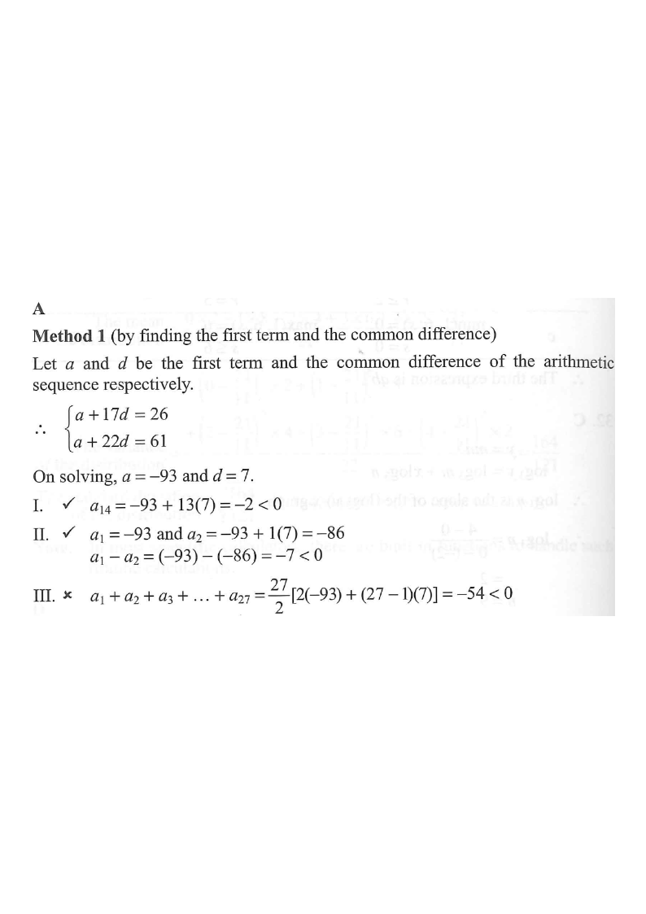

2012 MC #37Arithmetic Sequence — True / False Statements
Figure — Terms of the Sequence on a Number Line
Given terms \(a_{18},a_{23}\)Negative termsPositive termsSum \(S_{27}\)
Question Let \(a_n\) be the \(n\)th term of an arithmetic sequence. If
\(a_{18}=26\) and \(a_{23}=61\), which of the following are true?
I. \(\;a_{14}<0\)
II. \(\;a_{1}-a_{2}<0\)
III. \(\;a_{1}+a_{2}+a_{3}+\dots+a_{27}>0\)
A. I and II only B. I and III only C. II and III only D. I, II and III

Figure (original exam diagram)
1
Set up the general term
General Term of an Arithmetic Sequence\(a_{n}=a+(n-1)d\)The \(17\)th and \(22\)nd terms give \(a+17d=26\) and \(a+22d=61\), two equations in \(a\) and \(d\).
Let \(a\) be the first term and \(d\) the common difference. Then
\[a_n = a+(n-1)d.\]
Substituting the two given terms:
\[\begin{cases} a+17d=26\\ a+22d=61\end{cases}\]
Hint: two data points → two equations in \(a\) and \(d\).
2
Solve for \(a\) and \(d\)
Elimination Method for Simultaneous Equations\((a+22d)-(a+17d)=61-26\)Subtracting removes \(a\) at once and leaves \(5d=35\), so \(d=7\).
Sum of the First n Terms of an Arithmetic Sequence\(S_{n}=\dfrac{n}{2}\big[\,2a+(n-1)d\,\big]\)Put \(n=27\), \(a=-93\) and \(d=7\) to test whether \(S_{27}\) is positive.
Using \(S_n=\dfrac{n}{2}\big[\,2a+(n-1)d\,\big]\) with \(n=27\):
\[S_{27}=\frac{27}{2}\big[\,2(-93)+(27-1)(7)\,\big]\]
\[=\frac{27}{2}\big[-186+182\big]=\frac{27}{2}(-4)=-54<0.\]
✗ Statement III is FALSE.
Early negative terms dominate the sum — the average of \(a_1\) and \(a_{27}\) is negative.
6
Summarise and choose the option
I ✓\(a_{14}=-2<0\) — TRUEII ✓\(a_1-a_2=-7<0\) — TRUEIII ✗\(S_{27}=-54\not>0\) — FALSE
Only I and II are true.
Match with the options: "I and II only" is option A.
Answer: A (I and II only)
PRACTICESimilar question — try it yourself
Question. In an arithmetic sequence, the \(7\)th term is \(11\) and the \(12\)th term is \(31\). (a) Find the first term and the common difference. (b) Is the \(4\)th term negative? (c) Find the sum of the first \(10\) terms.
Show the worked solution
Step 1. Let the first term be \(a\) and the common difference \(d\). Then \(a+6d=11\) and \(a+11d=31\).
Step 2. Subtracting: \(5d=20\), so \(d=4\); then \(a=11-6(4)=-13\). Hence \(a_{n}=-13+4(n-1)=4n-17\).
Step 3. (b) \(a_{4}=4(4)-17=-1<0\), so yes, the \(4\)th term is negative. (The sequence is zero when \(4n-17=0\), i.e. \(n=4.25\).)